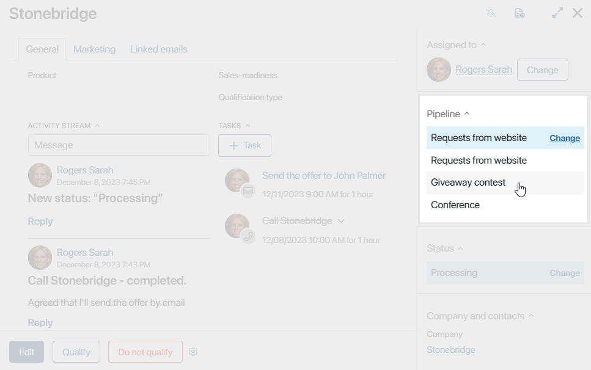
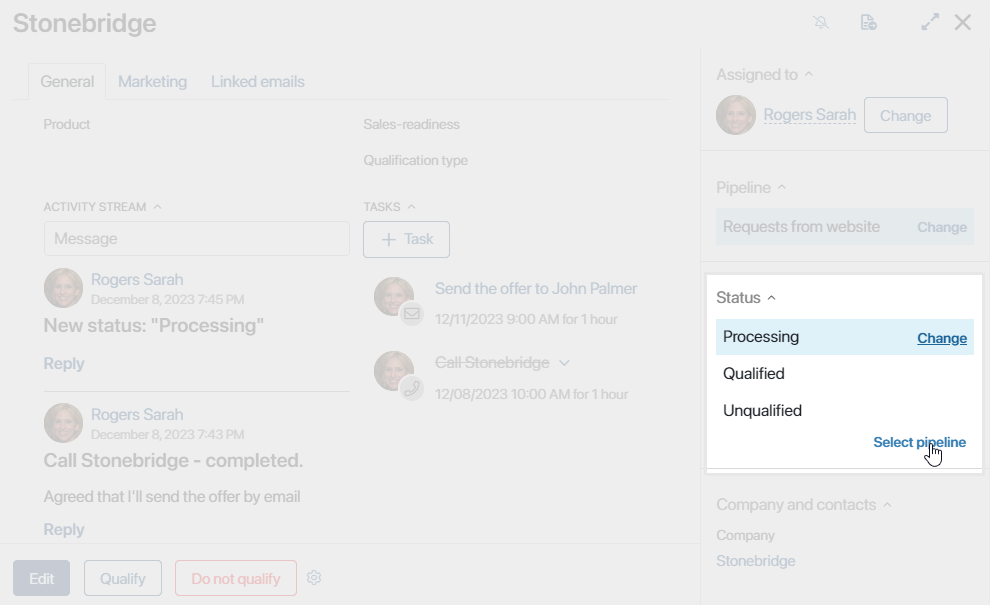
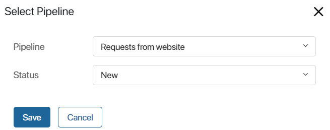
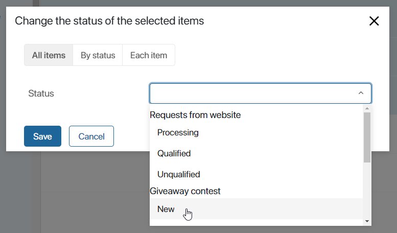

Your company may have several pipelines. For instance, pipelines for leads obtained through free webinars, contextual advertising, and those who directly contacted your managers about your offer. If necessary, a lead can be moved from one pipeline to another.
Suppose you are in online education. You received lead data when they signed up for a free webinar. They have been receiving newsletters and downloading useful materials, but have shown no interest in paid offers. Later, however, they reached out to you via messenger with questions about a specific course. You can move the lead to a pipeline for leads interested in a specific purchase, so they can go through different processing stages.
This can be done:
- On the lead page in the Pipeline widget.
- On the lead page in the App item status widget.
- Using a bulk action.
начало внимание
Only users with editing rights can move a lead to another pipeline.
конец внимание
Change the pipeline in the Pipeline widget
This option is available if the system administrator has allowed changing the pipeline in the widget settings.
To move a lead, open its page, click Change, and select an option from the dropdown list.

After moving, the item will be assigned the New status.
Change the pipeline in the App item status widget
This option is available if the system administrator has allowed changing the pipeline in the widget settings.
To move a lead:
- Open a lead’s page. On the sidebar, in the Status field, click Change, then Select pipeline.

- Select the desired pipeline and the status to be assigned to the lead.

If the created lead is not assigned to any sales rep, there will be no option to change its status in the window. The lead will move to the selected pipeline with the New status.
- Click Save.
The lead will move to the selected pipeline the new status.
Bulk lead pipeline change
To change the pipeline for several leads at once:
- At the top of the pipeline page, enable the Table view. On the Unallocated and All pages, leads are displayed as a table by default.
- Check the boxes next to the leads you want to move.
- In the top right corner of the page, click the Selected Items button and choose Change Status.
- In the window that opens, select the status in the pipeline you want to move the leads to.

- If there are leads among the selected items that do not have a responsible person, select it in the Assigned to* field that will additionally appear after filling in the Status field.
You can change the pipeline for all selected leads, for groups of leads with the same current status, or for each item individually. Read more about bulk status change in the Bulk actions article.
Found a typo? Select it and press Ctrl+Enter to send us feedback